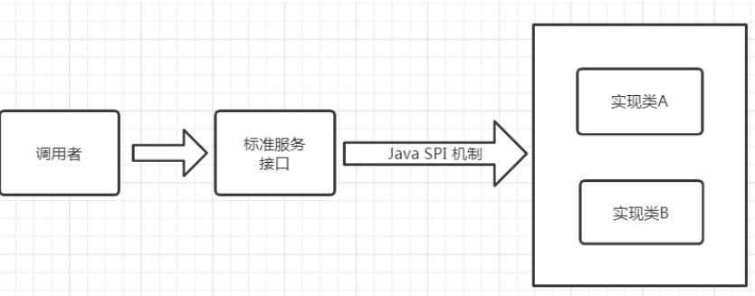

Dubbo使用
一、介绍
Dubbo简介
Apache Dubbo是一款高性能的Java RPC框架。其前身是阿里巴巴公司开源的一个高性能、轻量级的开源Java RPC框架，可以和Spring框架无缝集成。官网地址：https://dubbo.apache.org/zh/
核心功能：面向接口代理的高性能RPC调用、智能负载均衡、服务自动注册与发现。
Dubbo版本与Spring版本说明：Dubbo的使用是基于Spring环境下的，即Dubbo是依赖于Spring框架的。Dubbo2.7.0依赖的Spring是4.3.16。所以，在Dubbo的开发过程中最好使用与该Spring版本相同的Spring，这样可以避免可能的版本冲突问题。
Dubbo的服务治理
服务治理（SOA governance），企业为了确保项目顺利完成而实施的过程，包括最佳实践、架构原则、治理规程、规律以及其他决定性的因素。服务治理指的是用来管理SOA的采用和实现的过程。
Dubbo架构

Registry：注册中心，负责服务注册与查找，服务提供者Provider和服务消费者Consumer只在启动时与注册中心交互。注册中心通过长连接感知Provider的存在，当Provider宕机时，注册中心会立即推送相关事件通知Consumer；
Provider：服务提供者，启动时，会向Registry进行注册，将自己的服务地址和配置信息封装成URL添加到ZooKeeper 中；
Consumer：服务消费者，启动时，会向Registry 进行订阅操作。订阅操作会从注册中心获取Provider注册的 URL，并在注册中心中添加相应的监听器。获取到Provider URL之后，Consumer会根据负载均衡算法从多个Provider中选择一个并与其建立连接，最后发起对 Provider的RPC调用。 如果ProviderURL发生变更，Consumer将会通过之前订阅过程中在注册中心添加的监听器，获取到最新的ProviderURL信息，进行相应的调整，比如断开与宕机Provider的连接，并与新的Provider建立连接。Consumer与Provider建立的是长连接，且Consumer会缓存Provider信息，所以一旦连接建立，即使注册中心宕机，也不会影响已运行的Provider和Consumer；
Monitor：监控中心，用于统计服务的调用次数和调用时间。Provider和Consumer在运行过程中，会在内存中统计调用次数和调用时间，每分钟发送一次统计数据到监控中心。监控中心并不是必要角色，宕机只会丢失监控数据而已。
Dubbo连通性
注册中心负责服务地址的注册与查找，相当于目录服务，服务提供者和消费者只在启动时与注册中心交互，注册中心不转发请求，压力较小；
监控中心负责统计各服务调用次数，调用时间等，统计先在内存汇总后每分钟一次发送到监控中心服务器，并以报表展示；
服务提供者向注册中心注册其提供的服务，并汇报调用时间到监控中心，此时间不包含网络开销；
服务消费者向注册中心获取服务提供者地址列表，并根据负载算法直接调用提供者，同时汇报调用时间到监控中心，此时间包含网络开销；
注册中心，服务提供者，服务消费者三者之间均为 长连接 ，监控中心除外；
注册中心通过长连接感知服务提供者的存在，服务提供者宕机，注册中心将立即推送事件通知消费者；
注册中心和监控中心全部宕机，不影响已运行的提供者和消费者，消费者在本地缓存了提供者列表；
注册中心和监控中心都是可选的，服务消费者可以直连服务提供者。
高可用
监控中心宕掉不影响使用，只是丢失部分采样数据；
注册中心对等集群，任意一台宕掉后，将自动切换到另一台；
注册中心全部宕掉后，服务提供者和服务消费者仍能通过本地缓存通讯；
服务提供者无状态，任意一台宕掉后，不影响使用；
服务提供者全部宕掉后，服务消费者应用将无法使用，并无限次重连等待服务提供者恢复。
可扩展
注册中心为对等集群，可动态增加机器部署实例，所有客户端将自动发现新的注册中心；
服务提供者无状态，可动态增加机器部署实例，注册中心将推送新的服务提供者信息给消费者。
二、简单使用
POM
1221<properties>2 <dubbo.version>2.7.5</dubbo.version>3</properties>4
5
6<dependencies>7 <dependency>8 <groupId>org.apache.dubbo</groupId>9 <artifactId>dubbo</artifactId>10 <version>${dubbo.version}</version>11 </dependency>12 <dependency>13 <groupId>org.apache.dubbo</groupId>14 <artifactId>dubbo-common</artifactId>15 <version>${dubbo.version}</version>16 </dependency>17 <dependency>18 <groupId>org.apache.dubbo</groupId>19 <artifactId>dubbo-registry-zookeeper</artifactId>20 <version>${dubbo.version}</version>21 <exclusions>22 <exclusion>23 <groupId>org.apache.dubbo</groupId>24 <artifactId>dubbo-remoting-api</artifactId>25 </exclusion>26 <exclusion>27 <groupId>org.apache.dubbo</groupId>28 <artifactId>dubbo-common</artifactId>29 </exclusion>30 </exclusions>31 </dependency>32 <dependency>33 <groupId>org.apache.dubbo</groupId>34 <artifactId>dubbo-registry-nacos</artifactId>35 <version>${dubbo.version}</version>36 </dependency>37 <dependency>38 <groupId>org.apache.dubbo</groupId>39 <artifactId>dubbo-rpc-dubbo</artifactId>40 <version>${dubbo.version}</version>41 <exclusions>42 <exclusion>43 <groupId>org.apache.dubbo</groupId>44 <artifactId>dubbo-remoting-api</artifactId>45 </exclusion>46 <exclusion>47 <groupId>org.apache.dubbo</groupId>48 <artifactId>dubbo-common</artifactId>49 </exclusion>50 </exclusions>51 </dependency>52 <dependency>53 <groupId>org.apache.dubbo</groupId>54 <artifactId>dubbo-remoting-netty4</artifactId>55 <version>${dubbo.version}</version>56 <exclusions>57 <exclusion>58 <groupId>org.apache.dubbo</groupId>59 <artifactId>dubbo-remoting-api</artifactId>60 </exclusion>61 </exclusions>62 </dependency>63 <dependency>64 <groupId>org.apache.dubbo</groupId>65 <artifactId>dubbo-serialization-hessian2</artifactId>66 <version>${dubbo.version}</version>67 <exclusions>68 <exclusion>69 <groupId>org.apache.dubbo</groupId>70 <artifactId>dubbo-common</artifactId>71 </exclusion>72 </exclusions>73 </dependency>74
75
76 <!-- 日志配置 -->77 <dependency>78 <groupId>log4j</groupId>79 <artifactId>log4j</artifactId>80 <version>1.2.16</version>81 </dependency>82 <dependency>83 <groupId>org.slf4j</groupId>84 <artifactId>slf4j-api</artifactId>85 <version>1.7.5</version>86 </dependency>87 <dependency>88 <groupId>org.slf4j</groupId>89 <artifactId>slf4j-log4j12</artifactId>90 <version>1.7.5</version>91 </dependency>92
93 <!-- json数据化转换 -->94 <dependency>95 <groupId>com.alibaba</groupId>96 <artifactId>fastjson</artifactId>97 <version>1.2.62</version>98 </dependency>99
100
101 <!--引入高级模块的地址进行测试-->102 <dependency>103 <groupId>com.dubbo.demo</groupId>104 <artifactId>_1002-dubbo-advince</artifactId>105 <version>1.0.0</version>106 </dependency>107</dependencies>108
109
110<build>111 <plugins>112 <plugin>113 <groupId>org.apache.maven.plugins</groupId>114 <artifactId>maven-compiler-plugin</artifactId>115 <version>3.3</version>116 <configuration>117 <source>1.8</source>118 <target>1.8</target>119 </configuration>120 </plugin>121 </plugins>122</build>Producer
151public interface HelloService {2 String sayHello(String name);3}4
5// 实现类6import org.apache.dubbo.config.annotation.Service;7
8public class HelloServiceImpl implements HelloService {10
11 12 public String sayHello(String name) {13 return "hello " + name;14 }15}启动类
151("classpath:/dubbo-provider.properties")3//启动dubbo模块并开启组件扫描4(scanBasePackages = "com.dubbo.demo. provider.service.impl")5public class ProviderBootstrap {6 //启动服务7 public static void main(String[] args) throws IOException {8 //启动容器9 AnnotationConfigApplicationContext context = new 10 AnnotationConfigApplicationContext(ProviderBootstrap.class);11 context.start();12 //阻塞13 System.in.read();14 }15}配置
31dubbo.application.name=service-provider2dubbo.protocol.name=dubbo3dubbo.registry.address=zookeeper://192.168.186.10:2181?timeout=60000Consumer
111import org.apache.dubbo.config.annotation.Reference;2
3public class HelloHandler {5 6 private HelloService helloService;7
8 public String sayHello(String name){9 return helloService.sayHello(name);10 }11}启动类
161("com.dubbo.demo.consumer.handler")4("classpath:/dubbo-consumer.properties")5public class ConsumerBootstrap {6 public static void main(String[] args) throws IOException {7 AnnotationConfigApplicationContext context = new AnnotationConfigApplicationContext(ConsumerBootstrap.class);8 HelloHandler handler = context.getBean(HelloHandler.class);9 while (true){10 Scanner sc = new Scanner(System.in);11 String text = sc.nextLine();12 String dubbo = handler.sayHello(text);13 System.out.println(dubbo);14 }15 }16}配置文件
21dubbo.application.name=service-consumer2dubbo.registry.address=zookeeper://192.168.186.10:2181?timeout=60000三、Dubbo管理控制台
控制台介绍
Dubbo管理控制台主要包含：服务管理 、路由规则、动态配置、服务降级、访问控制、权重调整、负载均衡等管理功能。要知道Zookeeper注册中心都注册了哪些服务，有哪些消费者来消费这些服务。我们可以通过部署一个管理中心来实现。其实管理中心就是一个web应用，原来是war(2.6版本以前)包需
要部署到tomcat即可。现在是jar包可以直接通过java命令运行。
控制台部署
从git 上下载项目 https://github.com/apache/dubbo-admin。
修改项目下的dubbo.properties文件。注意dubbo.registry.address对应的值需要对应当前使用的Zookeeper的ip地址和端口号。
51l dubbo.registry.address=zookeeper://zk所在机器ip:zk端口2l dubbo.admin.root.password=root4l dubbo.admin.guest.password=root切换到项目所在的路径 使用mvn 打包 mvn clean package -Dmaven.test.skip=true
java 命令运行 java -jar 对应的jar包
四、Dubbo SPI使用
介绍
SPI 全称为 (Service Provider Interface) ，是JDK内置的一种服务提供发现机制。 很多框架用它来做服务的扩展发现，简单来说，它就是一种动态替换发现的机制。使用SPI机制的优势是实现解耦，使得第三方服务模块的装配控制逻辑与调用者的业务代码分离。

SPI约定：
当服务提供者提供了接口的一种具体实现后，在META-INF/services目录下创建一个以“接口全限定名”为命名的文件，内容为实现类的全限定名。
接口实现类所在的jar包放在主程序的classpath中。
主程序通过java.util.ServiceLoader动态装载实现模块，它通过扫描META-INF/services目录下的配置文件找到实现类的全限定名，把类加载到JVM。
SPI的实现类必须携带一个无参构造方法。
使用
API：定义一个标准的接口。
31public interface HelloService {2 String sayHello();3}Provider：提供一些接口的实现类。
121public class CatHelloService implements HelloService {2 3 public String sayHello() {4 return "喵喵~";5 }6}7public class DogHelloService implements HelloService {8 9 public String sayHello() {10 return "汪汪~";11 }12}在provider中配置：
META-INF/services，文件名com.advince.demo.api.service.HelloService。
21com.advince.demo.provider.impl.CatHelloService2com.advince.demo.provider.impl.DogHelloService
Dubbo中使用SPI
介绍
Dubbo中大量的使用了SPI来作为扩展点，通过实现同一接口的前提下，可以进行定制自己的实现类。比如比较常见的协议，负载均衡，都可以通过SPI的方式进行定制化，自己扩展。Dubbo中已经存在的所有已经实现好的扩展点。
Dubbo中没有使用JDK原生的SPI技术来进行加载，而是自己实现了一套SPI机制。
思考：那么为啥Dubbo要自己实现一套SPI呢？
1. JDK标准的SPI会一次性实例化扩展点所有实现，如果有扩展实现初始化很耗时，但如果没用上也加载，会很浪费资源。
2. 如果有扩展点加载失败，则所有扩展点无法使用。
3. 提供了对扩展点包装的功能(Adaptive)，并且还支持通过set的方式对其他的扩展点进行注入。
实现
pom
51<dependency>2 <groupId>org.apache.dubbo</groupId>3 <artifactId>dubbo</artifactId>4 <version>2.7.5</version>5</dependency>API
41public interface DubboHelloService {3 String sayHello();4}Provider：提供者就是正常的实现类。
121public class CatHelloService implements HelloService {2 3 public String sayHello() {4 return "喵喵~";5 }6}7public class DogHelloService implements HelloService {8 9 public String sayHello() {10 return "汪汪~";11 }12}配置文件：
META-INF/dubbo，文件名com.advince.demoapi.DubboHelloService
21dog=com.advince.demo.provider.DogHelloService2cat=com.advince.demo.provider.CatHelloServiceConsumer：使用SPI。
111public class DubboSpiTest {2 public static void main(String[] args) {3 ExtensionLoader<DubboHelloService> extensionLoader = ExtensionLoader.getExtensionLoader(DubboHelloService.class);4 // 遍历所有的支持的扩展点 META-INF/dubbo5 Set<String> extensions = extensionLoader.getSupportedExtensions();6 for (String extension : extensions) {7 DubboHelloService helloService = extensionLoader.getExtension(extension);8 System.out.println(helloService.sayHello());9 }10 }11}Adaptive功能
Dubbo中的Adaptive功能，动态的选择具体的扩展点。通过getAdaptiveExtension 统一对指定接口对应的所有扩展点进行封装，通过URL的方式对扩展点来进行动态选择(dubbo中所有的注册信息都是通过URL的形式进行处理的)。
使用
API：
51 //@SPI//("dog") 来指定默认的实现方式2public interface DubboHelloService {3 4 String sayHello(URL url);5}Consumer
91public class DubboSpiTest {2 public static void main(String[] args) {3 // 如果是测试的话这前边的地址随便写但是？后边的需要写接口名=配置文件中的key4 URL url = URL.valueOf("test://localhost/hello?dubbo.hello.service=cat");5 DubboHelloService adaptiveExtension = ExtensionLoader.getExtensionLoader(DubboHelloService.class).getAdaptiveExtension();6 String msg = adaptiveExtension.sayHello(url);7 System.out.println(msg);8 }9}五、Filter过滤器
介绍
Dubbo的Filter机制，是专门为服务提供方和服务消费方调用过程进行拦截设计的，每次远程方法执行，该拦截都会被执行。这样就为开发者提供了非常方便的扩展性，比如为dubbo接口实现ip白名单功能、监控功能 、日志记录等。
Dubbo的Filter机制是用的是Dubbo的SPI机制进行动态加载的，扩展性非常好
使用
POM：
51<dependency>2 <groupId>org.apache.dubbo</groupId>3 <artifactId>dubbo</artifactId>4 <version>2.7.5</version>5</dependency>过滤器：
121(group = {CommonConstants.CONSUMER, CommonConstants.PROVIDER})2public class InvokeFilter implements Filter {3 4 public Result invoke(Invoker<?> invoker, Invocation invocation) throws RpcException {5 long start = System.currentTimeMillis();6 try {7 return invoker.invoke(invocation);8 } finally {9 System.out.println("耗时：" + (System.currentTimeMillis() - start));10 }11 }12}SPI配置：
META-INF/dubbo，文件名org.apache.dubbo.rpc.Filter
11timeFilter=com.advince.demo.filter.InvokeFilter注意：如果那个服务使用的话直接引入这个filter的依赖即可。
六、负载均衡
使用
81//在服务消费者一方配置负载均衡策略2(check = false,loadbalance = "random")3// 注意：使用注解的话是接口级别的xml可以控制到方法级别对的4// 配置的值5// random 【随机】（存在消息堆积）6// roundrobin【轮询】7// leastactive【最小负载】（存在消息堆积）8// consistenthash【一致性hash】（存在消息堆积）自定义策略
141// 调用ip值最小的服务器如果相等调用端口最小的。2public class MyLoadBalance implements LoadBalance {3
4 5 public <T> Invoker<T> select(List<Invoker<T>> list, URL url, Invocation invocation) throws RpcException {6 return list.stream().sorted((i1,i2)->{7 int i = i1.getUrl().getIp().compareTo(i2.getUrl().getIp());8 if (i == 0) {9 return Integer.compare(i1.getUrl().getPort(),i2.getUrl().getPort());10 }11 return i;12 }).findFirst().get();13 }14}配置：
META-INF/dubbo，文件名org.apache.dubbo.rpc.cluster.LoadBalance
11myLoadBalance=com.advince.demo.loadbalance.MyLoadBalance使用：
11(check = false,loadbalance = "myLoadBalance")七、异步调用
介绍
Dubbo提供了异步调用的方式应用于提供者接口响应耗时明显，消费者端可以利用调用接口的时间去做一些其他的接口调用,利用 Future 模式来异步等待和获取结果即可。这种方式可以大大的提升消费者端的利用率。 目前这种方式可以通过XML的方式进行引入。
XML使用方式
配置
31<dubbo:reference id="helloService" interface="com.dubbo.demo.HelloService">2 <dubbo:method name="sayHello" async="true" /><!--针对方法级别的-->3</dubbo:reference>Code
61//调用业务方法2String hello = service.sayHello("world");3// 利用Future 模式来获取4Future<Object> future = RpcContext.getContext().getFuture();5System.out.println("result :" + hello);6System.out.println("future result:"+future.get());注意：需要特别说明的是，该方式的使用，请确保dubbo的版本在2.5.4及以后的版本使用。 原因在于在2.5.3及之前的版本会出现异步状态传递问题。比如我们的服务调用关系是 A -> B -> C , 这时候如果A向B发起了异步请求，在错误的版本时，B向C发起的请求也会连带的产生异步请求。这是因为在底层实现层面，他是通过 RPCContext 中的attachment 实现的。在A向B发起异步请求时，会在 attachment 中增加一个异步标示字段来表明异步等待结果。B在接受到A中的请求时，会通过该字段来判断是否是异步处理。但是由于值传递问题，B向C发起时同样会将该值进行传递，导致C误以为需要异步结果，导致返回空。这个问题在2.5.4及以后的版本进行了修正。
八、线程池配置
介绍
自带线程池：dubbo在使用时，在provider中都是通过创建真实的业务线程池进行操作的。目前已知的线程池模型有两个和java中的相互对应。
fix: 表示创建固定大小的线程池。也是Dubbo默认的使用方式，默认创建的执行线程数为200，并且是没有任何等待队列的。所以再极端的情况下可能会存在问题，比如某个操作大量执行时，可能存在堵塞的情况。后面也会讲相关的处理办法
cache: 创建非固定大小的线程池，当线程不足时，会自动创建新的线程。但是使用这种的时候需要注意，如果突然有高TPS的请求过来，方法没有及时完成，则会造成大量的线程创建，对系统的CPU和负载都是压力，执行越多反而会拖慢整个系统。
自定义线程池
自定义线程池需求：线程池实现, 这里主要是基于对FixedThreadPool中的实现做扩展出线程监控的部分。
POM
281<dependency>2 <groupId>org.apache.dubbo</groupId>3 <artifactId>dubbo</artifactId>4 <version>2.7.5</version>5</dependency>6<dependency>7 <groupId>org.apache.dubbo</groupId>8 <artifactId>dubbo-common</artifactId>9 <version>2.7.5</version>10</dependency>11
12
13<!-- 日志配置 -->14<dependency>15 <groupId>log4j</groupId>16 <artifactId>log4j</artifactId>17 <version>1.2.16</version>18</dependency>19<dependency>20 <groupId>org.slf4j</groupId>21 <artifactId>slf4j-api</artifactId>22 <version>1.7.5</version>23</dependency>24<dependency>25 <groupId>org.slf4j</groupId>26 <artifactId>slf4j-log4j12</artifactId>27 <version>1.7.5</version>28</dependency>自定义线程池
461public class MyThreadPool extends FixedThreadPool implements Runnable {2
3 //自定义log监听机制4 private static final Logger LOGGER = LoggerFactory.getLogger(MyThreadPool.class);5 //指定阈值 当达到0.9的时候会报警6 private static final double ALARM_PERCENT = 0.90;7 //用来装当前执行的线程数量8 private final Map<URL, ThreadPoolExecutor> THREAD_POOLS = new ConcurrentHashMap<>();9
10 public MyThreadPool() {11 // 每隔3秒打印线程使用情况12 Executors.newSingleThreadScheduledExecutor()13 .scheduleWithFixedDelay(this, 1, 3, TimeUnit.SECONDS);14 }15
16 17 public Executor getExecutor(URL url) {18 // 从父类中创建线程池19 final Executor executor = super.getExecutor(url);20 //放入到当前的map中21 if (executor instanceof ThreadPoolExecutor) {22 THREAD_POOLS.put(url, ((ThreadPoolExecutor) executor));23 }24 return executor;25 }26
27 28 public void run() {29 for (Map.Entry<URL, ThreadPoolExecutor> entry : THREAD_POOLS.entrySet()) {30 final URL url = entry.getKey();31 final ThreadPoolExecutor executor = entry.getValue();32
33 // 当前执行中的线程数34 final int activeCount = executor.getActiveCount();35 // 总计线程数36 final int poolSize = executor.getCorePoolSize();37
38 double used = (double) activeCount / poolSize * (1.0);39 LOGGER.info("线程池执行状态:[{}/{}]:{}%", activeCount, poolSize, (used * 100));40
41 if (used >= ALARM_PERCENT) {42 LOGGER.error("超出警戒值！host:{}, 当前已使用量:{}%, URL:{}", url.getIp(), (used * 100), url);43 }44 }45 }46}SPI配置文件：
META-INF/dubbo文件名org.apache.dubbo.common.threadpool.ThreadPool
11myThreadpool=com.demo.MyThreadPool系统配置：
11dubbo.provider.threadpool= myThreadpool九、路由配置
介绍
Dubbo在默认情况下会利用负载均衡将流量打到对应的provider上，但是我们在针对某一台服务器调试的时候需要将流量专门达到这个provider，Dubbo提供的路由功能就是可以限制consumer和provider，将流量打到我们指定的服务器上。
路由是决定一次请求中需要发往目标机器的重要判断，通过对其控制可以决定请求的目标机器。我们可以通过创建这样的规则来决定一个请求会交给哪些服务器去处理。
使用Demo
131public static void main(String[] args) {2 //通过rmi获取到注册在红心3 RegistryFactory registryFactory = ExtensionLoader.4 getExtensionLoader(RegistryFactory.class).getAdaptiveExtension();5 //获取到注册中心6 Registry registry = registryFactory.getRegistry(URL.valueOf("zookeeper://127.0.0.1:2181"));7
8 //编写自己的路由规则9 registry.register(10 URL.valueOf("condition://0.0.0.0/com.dubbo.service.HelloService ?category=routers&force=true&dynamic=true&rule="11 //providerIP12 + URL.encode(" =>host!=127.0.0.1")));13}路由规则说明
我们实际本质上就是通过在zookeeper中保存一个节点数据，来记录路由规则。消费者会通过监听这个服务的路径，来感知整个服务的路由规则配置，然后进行适配。这里主要介绍路由配置的参数。官网文档说明。
route: condition://表示路由规则的类型，支持条件路由规则和脚本路由规则，可扩展（必填）。
0.0.0.0：表示对所有 IP 地址生效，如果只想对某个 IP 的生效，请填入具体IP（必填）。
com.demo.service.HelloService：表示只对指定服务生效（必填）。
category=routers：表示该数据为动态配置类型（必填）。
dynamic：是否为持久数据，当指定服务重启时是否继续生效（必填）。
runtime：是否在设置规则时自动缓存规则，如果设置为true则会影响部分性能。
rule：是整个路由最关键的配置，用于配置路由规则。
...=>...：在这里=>前面的就是表示消费者方的匹配规则，可以不填(代表全部)。=>后方则必须填写，表示当请求过来时，如果选择提供者的配置。host 参数是根据ip进行过滤（必填）。
应用
说明
需求：利用路由的功能来提供对上线的服务进行保护，比如有三个provider，一台重启的话流量就无法打到这台服务器上。
思路：
利用zookeeper的路径感知能力，在服务准备进行重启之前将当前机器的IP地址和应用名写入zookeeper。
服务消费者监听该目录，读取其中需要进行关闭的应用名和机器IP列表并且保存到内存中。
当前请求过来时，判断是否是请求该应用，如果是请求重启应用，则将该提供者从服务列表中移除。
实现
POM
151<dependency>2 <groupId>org.apache.dubbo</groupId>3 <artifactId>dubbo</artifactId>4 <version>2.7.5</version>5</dependency>6<dependency>7 <groupId>org.apache.dubbo</groupId>8 <artifactId>dubbo-common</artifactId>9 <version>2.7.5</version>10</dependency>11<dependency>12 <groupId>org.apache.curator</groupId>13 <artifactId>curator-recipes</artifactId>14 <version>2.10.0</version>15</dependency>ZKClient与路径管理器
1031public class ZKClient {2 public static CuratorFramework client = null;3 private static ZKClient instance = new ZKClient();4
5 static{6 client = CuratorFrameworkFactory.newClient("127.0.0.1:2181",7 new ExponentialBackoffRetry(1000,3));8 client.start();9 }10 public static CuratorFramework getZkClient(){11 return client;12 }13 private ZKClient() {14 }15}16
17// 路径管理器18public class ReadyRestartInstanceManager implements PathChildrenCacheListener {19 //日志管理20 public static final Logger LOGGER = LoggerFactory.getLogger(ReadyRestartInstanceManager.class);21 private static final CuratorFramework zkClient = ZKClient.getZkClient();22
23 //存储的路径24 private static final String READY_INSTANCE_PATH = "/ready/instances";25 //存储的机器集合26 private volatile Set<String> restartInstances = new HashSet<>();27
28 //创建实例29 public static ReadyRestartInstanceManager create(){30 //初始化监控路径31 initMonitorPath();32 final ReadyRestartInstanceManager instances = new ReadyRestartInstanceManager();33 //创建监听34 createListener(instances);35 return instances;36 }37
38 /**39 * 创建监听40 */41 private static void createListener(ReadyRestartInstanceManager instances) {42 // 创建一个NodeCache43 PathChildrenCache nodeCache = new PathChildrenCache(zkClient, READY_INSTANCE_PATH, false);44 // 给节点缓存对象 加入监听45 nodeCache.getListenable().addListener(instances);46 try {47 nodeCache.start();48 } catch (Exception e) {49 e.printStackTrace();50 LOGGER.error("启动路径监听失败");51 }52 }53
54 /**55 * 初始化监控路径56 */57 private static void initMonitorPath() {58 try {59 final Stat stat = zkClient.checkExists().forPath(READY_INSTANCE_PATH);60 if (stat == null){61 zkClient.create().creatingParentsIfNeeded().forPath(READY_INSTANCE_PATH);62 }63 } catch (Exception e) {64 e.printStackTrace();65 LOGGER.error("确保基础路径存在");66 }67 }68
69 //监听70 71 public void childEvent(CuratorFramework zkClient, PathChildrenCacheEvent pathChildrenCacheEvent) throws Exception {72 // 查询出监听路径下 所有的目录配置信息73 List<String> instances = zkClient.getChildren().forPath(READY_INSTANCE_PATH);74 restartInstances.addAll(instances);75 }76
77
78 /**79 * 添加注册实例方法80 */81 public void addRegistryInstance(String applicationName,String ip) throws Exception {82 zkClient.create().creatingParentsIfNeeded()83 .forPath(READY_INSTANCE_PATH + "/" + buildPath(applicationName, ip));84 }85
86 private String buildPath(String applicationName, String ip) {87 return applicationName + "_" + ip;88 }89
90
91 /**92 * 删除重启实例的配置信息方法93 */94 public void removeRestartingInstance(String applicationName, String ip) throws Exception {95 zkClient.delete().forPath(READY_INSTANCE_PATH + "/" + buildPath(applicationName, ip));96 }97 /**98 * 判断节点信息 是否存在于 restartInstances99 */100 public boolean hasRestartingInstance(String applicationName,String host){101 return restartInstances.contains(buildPath(applicationName,host));102 }103}路由
371public class RestartingInstanceRouter implements Router {2 private final ReadyRestartInstanceManager pathManager;3 private final URL url;4
5 public RestartingInstanceRouter(URL url) {6 this.url = url;7 this.pathManager = ReadyRestartInstanceManager.create();8 }9
10 11 public URL getUrl() {12 return url;13 }14
15 16 public <T> List<Invoker<T>> route(List<Invoker<T>> list, URL url, Invocation invocation) throws RpcException {17 return list.stream()18 .filter(i -> !pathManager.hasRestartingInstance(i.getUrl().getParameter("remote.application"),19 i.getUrl().getIp()))20 .collect(Collectors.toList());21 }22
23 24 public boolean isRuntime() {25 return false;26 }27
28 29 public boolean isForce() {30 return false;31 }32
33 34 public int getPriority() {35 return 0;36 }37}路由工厂
71public class RestartingInstanceRouterFactory implements RouterFactory {3 4 public Router getRouter(URL url) {5 return new RestartingInstanceRouter(url);6 }7}SPI配置：
META-INF/dubbo文件名org.apache.dubbo.rpc.cluster.RouterFactory
11restartInstances=com.demo.RestartingInstanceRouterFactory思考：为啥需要通过工厂来加载路由呢？而不直接加载路由？
由于 Router 机制比较特殊，所以需要利用一个专门的 RouterFactory 来生成，原因在于并不是所有的都需要添加路由，所以需要利用 @Activate 来锁定具体哪些服务才需要生成使用。
十、服务降级
介绍
服务降级，当服务器压力剧增的情况下，根据当前业务情况及流量对一些服务有策略的降低服务级别，以释放服务器资源，保证核心任务的正常运行。
思考：而为什么要使用服务降级？
回答：这是防止分布式服务发生雪崩效应，什么是雪崩？就是蝴蝶效应，当一个请求发生超时，一直等待着服务响应，那么在高并发情况下，很多请求都是因为这样一直等着响应，直到服务资源耗尽产生宕机，而宕机之后会导致分布式其他服务调用该宕机的服务也会出现资源耗尽宕机，这样下去将导致整个分布式服务都瘫痪，这就是雪崩。
实现
实现方式1：
mock=force:return+null，表示消费方对该服务的方法调用都直接返回null值，不发起远程调用。用来屏蔽不重要服务不可用时对调用方的影响。实现方式2：
mock=fail:return+null，表示消费方对该服务的方法调用在失败后，再返回null值，不抛异常。用来容忍不重要服务不稳定时对调用方的影响。【推荐】方式2配置
31(mock="return null") 2
3(mock="return 简单值")动态写入配置中心：
51RegistryFactory registryFactory = ExtensionLoader2 .getExtensionLoader(RegistryFactory.class).getAdaptiveExtension();3
4Registry registry = registryFactory.getRegistry(URL.valueOf("zookeeper://IP:端口"));5registry.register(URL.valueOf("override://0.0.0.0/com.foo.BarService? category=configurators&dynamic=false&application=foo&mock=force:return+null"));十一、集群容错
介绍
集群容错指的是当消费者调用提供者集群时发生异常的处理方案。
Dubbo内置的容错方案：
Failover：故障转移策略，当消费者调用提供者集群中的某个服务器失败时，其会自动尝试着调用其它服务器。该策略通常用于读操作，例如，消费者要通过提供者从DB中读取某数据。但重试会带来服务延迟（默认的实现方案）。
Failfast：快速失败策略，消费者端只发起一次调用，若失败则立即报错。通常用于非幂等性的写操作，比如新增记录。
Failsafe：失败安全策略，当消费者调用提供者出现异常时，直接忽略本次消费操作。该策略通常用于执行相对不太重要的服务，例如，写入审计日志等操作。
Failback：失败自动恢复策略，消费者调用提供者失败后，Dubbo会记录下该失败请求，然后定时自动重新发送该请求。该策略通常用于实时性要求不太高的服务，例如消息通知操作。
Forking：并行策略，消费者对于同一服务并行调用多个提供者服务器，只要一个成功即调用结束并返回结果。通常用于实时性要求较高的读操作，但其会浪费较多服务器资源。
Broadcast：广播策略，广播调用所有提供者，逐个调用，任意一台报错则报错。通常用于通知所有提供者更新缓存或日志等本地资源信息。
配置集群容错策略
21<dubbo:service interface="com.dubbo.demo._02ByXml.api.HelloService" 2 ref="helloService" cluster="Failover"/>容错策略可以设置在消费者端，也可以设置在生产端。若消费者与生产端均做了设置，则消费者端的优先级更高。
十二、集群限流
介绍
对待高并发的三把利器：缓存、降级、限流。
为了防止某个消费者的QPS或是所有消费者的QPS总和突然飙升而导致的重要服务的失效，系统可以对访问流量进行控制，这种对集群的保护措施称为服务限流。
Dubbo限流方式：
直接限流：通过对连接数量直接进行限制来达到限流的目的。
间接限流：通过一些非连接数量设置来达到限制流量的目的。
直接限流
executes限流–仅提供者端：该属性仅能设置在提供者端，可以设置为接口级别，也可以设置为方法级别。限制的是服务（方法）并发执行数量。
21<!--每个方法并行线程数不能超过10-->2<dubbo:service interface="com.dubbo.demo.api.HelloService" ref="helloService" executes="10"/>accepts限流–仅提供者端：该属性仅可设置在提供者端的dubbo:provider/与dubbo:protocol/。用于对指定协议的连接数量进行限制。
21<!--当前提供者在使用dubbo协议时最多允许有10个消费者进行连接-->2<dubbo:provider protocol="dubbo" accepts="10"/>actives限流–两端：该限流方式与前两种不同的是，其可以设置在提供者端，也可以设置在消费者端。可以设置为接口级别，也可以设置为方法级别。
提供者限流：
长连接：表示当前长连接最多可以处理的请求个数。与长连接的数量没有关系。
短连接：表示当前服务可以同时处理的短连接数量。
11<dubbo:service interface="com.dubbo.demo.api.HelloService" ref="helloService" actives="10"/>消费者端限流：
长连接：表示当前消费者所发出的长连接中最多可以提交的请求个数。与长连接的数量没有关系。
短连接：表示当前消费者可以提交的短连接数量。
11<dubbo:reference id="helloService" interface="com.dubbo.demo.api.HelloService" actives="10" connections="10"/>connections限流：可以设置在提供者端，也可以设置在消费者端。限定连接的个数。对于短连接，该属性效果与actives相同。但对于长连接，其限制的是长连接的个数。一般情况下，我们会使connectons与actives联用，让connections 限制长连接个数，让actives 限制一个长连接中可以处理的请求个数。联用前提：使用默认的Dubbo服务暴露协议。
消费端
11<dubbo:reference id="helloService" interface="com.dubbo.demo.api.HelloService" actives="10" connections="10"/>间接限流
延迟连接–仅消费者端：仅可设置在消费者端，且不能设置为方法级别。仅作用于Dubbo服务暴露协议。将长连接的建立推迟到消费者真正调用提供者时。可以减少长连接的数量。
11<dubbo:reference id="helloService" interface="com.dubbo.demo.api.HelloService" lazy="true"/>粘连连接–仅消费者：仅能设置在消费者端，其可以设置为接口级别，也可以设置为方法级别。仅作用于Dubbo 服务暴露协议。其会使客户端尽量向同一个提供者发起调用，除非该提供者挂了，其会连接另一台。只要启用了粘连连接，其就会自动启用延迟连接。
11<dubbo:reference id="helloService" interface="com.dubbo.demo.api.HelloService" sticky="true"/>注意：其限制的是流向，而非流量
负载均衡：可以设置在消费者端，亦可设置在提供者端；可以设置在接口级别，亦可设置在方法级别。其限制的是流向，而非流量。
十三、声明式缓存
介绍
为了进一步提高消费者对用户的响应速度，减轻提供者的压力，Dubbo 提供了基于结果的声明式缓存。该缓存是基于消费者端的，所以使用很简单，只需修改消费者配置文件，与提供者无关。
应用场景：应用于查询结果不会发生改变的情况，例如，查询某产品的序列号、订单、身份证号等。
配置
全局
11<dubbo:reference id="helloService" interface="com.dubbo.demo.api.HelloService" cache="true"/>方法
31<dubbo:reference id="helloService" interface="com.dubbo.demo.api.HelloService" cache="true">2 <dubbo:method name="sayHello" cache="true"/>3</dubbo:reference>缓存说明：声明式缓存中可以缓存多少个结果呢？默认可以缓存 1000 个结果。若超出 1000，将采用 LRU 策略来删除缓存，以保证最热的数据被缓存。注意，该删除缓存的策略不能修改。
十四、SpringBoot结合使用
POM
531<parent>2 <groupId>org.springframework.boot</groupId>3 <artifactId>spring-boot-starter-parent</artifactId>4 <version>2.2.1.RELEASE</version>5 <relativePath/> <!-- lookup parent from repository -->6</parent>7
8<dependencies>9 <!--curator客户端-->10 <dependency>11 <groupId>org.apache.curator</groupId>12 <artifactId>curator-framework</artifactId>13 <version>2.12.0</version>14 </dependency>15
16 <!-- Dubbo Spring Boot Starter -->17 <dependency>18 <groupId>com.alibaba.boot</groupId>19 <artifactId>dubbo-spring-boot-starter</artifactId>20 <version>0.2.1.RELEASE</version>21 <exclusions>22 <exclusion>23 <groupId>org.slf4j</groupId>24 <artifactId>slf4j-log4j12</artifactId>25 </exclusion>26 <exclusion>27 <groupId>log4j</groupId>28 <artifactId>log4j</artifactId>29 </exclusion>30 </exclusions>31 </dependency>32
33 <dependency>34 <groupId>com.alibaba</groupId>35 <artifactId>dubbo</artifactId>36 <version>${dubbo.version}</version>37 </dependency>38
39 <dependency>40 <groupId>io.netty</groupId>41 <artifactId>netty-all</artifactId>42 </dependency>43
44 <dependency>45 <groupId>org.springframework.boot</groupId>46 <artifactId>spring-boot-starter-web</artifactId>47 </dependency>48
49 <dependency>50 <groupId>org.springframework.boot</groupId>51 <artifactId>spring-boot-starter-test</artifactId>52 </dependency>53</dependencies>provider
181//开启Dubbo自动配置功能3("classpath:/provider-config.properties")4public class ProviderApplication {5 public static void main(String[] args) {6 SpringApplication.run(ProviderApplication.class, args);7 }8}9
10//service导入的是dubbo的包11public class HelloServiceImpl implements HelloService {14 15 public String sayHello() {16 return "hello dubbo";17 }18}81server.port=80822# dubbo3dubbo.application.name=provider-service4# zookeeper5dubbo.registry.address=192.168.159.128:2181?timeout=600006dubbo.registry.protocol=zookeeper7# 可以不配置monitor8# dubbo.monitor.protocol=registryConsumer
191public class DemoController {3 4 private HelloService helloService;5
6 ("hello")7 public String sayHello(){8 return helloService.sayHello();9 }10}11
12("classpath:/consumer-config.properties")15public class ConsumerApplication {16 public static void main(String[] args) {17 SpringApplication.run(ConsumerApplication.class, args);18 }19}81server.port=80832# dubbo3dubbo.application.name=consumer-service4# zookeeper5dubbo.registry.address=192.168.159.128:2181?timeout=600006dubbo.registry.protocol=zookeeper7# 可以不配置monitor8# dubbo.monitor.protocol=registry